5505A MULTI-FUNCTION COMPONENTS
- Path
- Descriptions > 55 ELECTRICAL EQUIPMENT > 5505 INSTRUMENT/GAUGE ELECTRICAL CIRCUITS > 5505A MULTI-FUNCTION COMPONENTS
- Kind
- system description
- Applies to
- all engines; all production periods
- Interactive page
- https://sloeber94.github.io/elrnDB-fCrm/en/#/194001925
Applies to: all engines; all production periods
BODY COMPUTER NODE
Specifications
The Body Computer Node (NBC) is an electronic component connected to the vehicle serial networks which manages the basic functions of the Mini F.L.Ore.N.C.E structure (interior/exterior lighting, immobilizer, fault diagnosis, heated rear windscreen, door locking, alarm, fuel level) and houses the gateway between the B-CAN and the C-CAN.
The NBC also carries out interconnection functions between the dashboard, front and rear wiring and is connected to the Dashboard Control Unit (CPL) by means of a connector at the front.
There is also a fixed EOBD connector at the front capable of carrying out the fault diagnosis via the K line for the Engine Management Node and the systems not connected to the B-CAN line (e.g. the air bag) and via the B-CAN line for the nodes connected to it. There is a possible assembly programme for the latter.
General functions of the body computer node
To sum up, the NBC carries out the following functions:
- Receives and transmits information on the B-CAN (e.g.: diagnosis, warning lights, controls, data);
- Receives and transmits information on the C-CAN;
- Houses the gateway for communication between the C-CAN and B-CAN;
- Is connected to the dashboard, front and rear wiring;
- Allows interface for fault diagnosis (EOBD);
- Low consumption supply mode management (Logistic Mode);
- Is connected to the CPL to take supplies/signals and operate relays.
The following functions are included:
- management of the courtesy lights with a timer and dimmer function;
- management of the on/off outputs at the relays: headlamp washer pump, main beam headlamps, fog lights, dipped headlamps, rear windscreen and services,
- on/off management of left/right direction indicators and hazard warning lights;
- on/off output management directly at loads and light check function: front and rear side lights (left and right), front, rear and side direction indicators (left and right), number plate lights (left and right), brake lights (left and right), rear fog lamps (left and right);
- management of the on/off outputs at the loads: hazard warning LED, etc.;
- acquisition and repetition of vehicle speed signal;
- management of the driver for the ideogram lights;
- management of the driver for SBMT (switching off loads with ignition OFF);
- recovery serial line (W) management to engine management control unit (immobilizer);
management of serial line (A-BUS) to rain/dusk sensor, steering column switch unit, volumetric alarm control unit and tyre pressure control unit;
- entire system master: management of slave nodes in its direct jurisdiction and monitoring by other master nodes, monitoring and management of protocol errors, timer control;
- entire system fault diagnosis: collection of diagnostic information, management of fault diagnosis through EXAMINER.;
- acquisition of on/off signals: control of dipped headlamps, control of main beam headlamps, control of boot lock opening, control of boot lock locking, handbrake control, hazard warning lights control, left and right rear fog lamps control, fog lights relay control, left direction indicators control, right direction indicators control, parking lights control, side lights control, city control, steering column switch unit auto control, headlamp washer control, FIS control, boot button, bonnet button, front brake pad wear, brake fluid level, reverse gear engaged;
- acquisition of analogue signals: fuel level, alternator voltage (D+), battery voltage;
- recognition of brake lights fuse status, centre courtesy light control, left and right spot lights control, brake lights controls, acquisition of signals for lock sensors from doors;
- preparation for possible inclusion of new electric functions.
Refer to the pin out described later on for the description of further functions in detail.
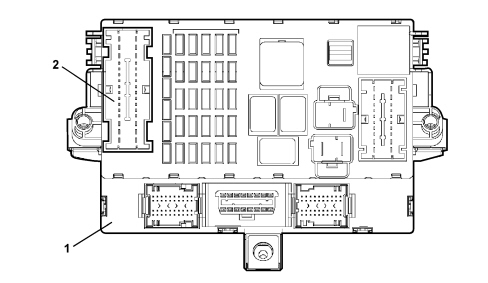
1 - Body Computer Node (NBC)
2 - Dashboard Control Unit (CPL), described below
NBC+CPL = NPL
Body computer connections
The Body Computer connections are illustrated in the diagram.
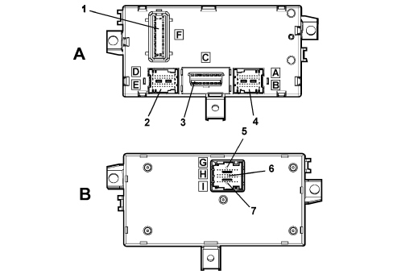
A - Body Computer Node (NBC), front view
B - Body Computer Node (NBC), rear view
1 - Connector F (connection with the dashboard control unit)
2 - Connector D/E
3 - Connector C (EOBD diagnostic socket)
4 - Connector A/B
5 - Connector G/H/I
Body computer node pin out
Connector A/B (20 + 20 way), front wiring
Pin | Function |
|---|---|
1 | Reverse gear engagement positive signal for electrochromic mirror/rearscreen wiper |
2 | Left side direction indicator control output |
3 | N.C. |
4 | N.C. |
5 | N.C. |
6 | N.C. |
7 | Speedometer signal input (VSO) from NFR |
8 | Fog lights relay negative signal |
9 | Main beam headlamps relay negative signal |
10 | INT for CPS, CPD |
11 | +30 battery power supply (CSA, NAS, CAV, EOBD diagnostic socket, courtesy lights) |
12 | N.C. |
13 | Positive input from steering column switch unit for headlamp washer control/wish-wash signal |
14 | Headlamp washer relay negative signal |
15 | N.C. |
16 | NFR node K line |
17 | N.C. |
18 | Negative signal from switch signalling insufficient brake fluid level (NA) |
19 | Alternator D+ signal |
20 | K line for NCM and NCA nodes diagnosis |
21 | N.C. |
22 | Right side direction indicator control output |
23 | Negative signal from left front brake pad wear sensor |
24 | Negative signal from NC switch signalling bonnet open |
25 | A-bus serial line for CPP, CSA and DEV |
26 | B-CAN A |
27 | B-CAN B |
28 | Repetition of speedometer signal (VSO) for CPS |
29 | IN/OUT recovery serial for NCM (immobilizer) - W line |
30 | Right front side light operation output |
31 | N.C. |
32 | C-CAN L (preparation) |
33 | C-CAN H (preparation) |
34 | +30 for CSA |
35 | K line for CPS, CPD, NGE |
36 | C-CAN L to NYL |
37 | C-CAN H to NYL |
38 | Left front direction indicator control output |
39 | Right front direction indicator control output |
40 | Left front side light operation output |
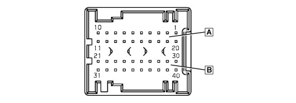
Connector C (16-way), EOBD diagnostic socket
Pin | Function |
|---|---|
1 | K line for NFR |
2 | Not available |
3 | K line for Air Bag (N.C.) |
4 | Power earth |
5 | Signal earth |
6 | B-CAN B |
7 | K line for NCM and NCA nodes diagnosis |
8 | Not available |
9 | K line for dashboard zone (preparation) |
10 | Not available |
11 | Not used |
12 | K line for front zone (CPS, CPD, CRS, NGE) |
13 | K line for rear zone (CPP) |
14 | B-CAN A |
15 | Not available |
16 | +30 battery power supply |
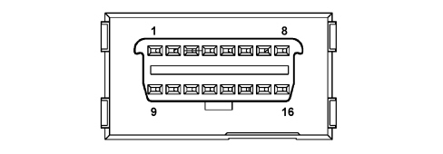
Connector D/E (20 + 20 way), rear wiring
Pin | Function |
|---|---|
1 | N.C. |
2 | N.C. |
3 | Right rear direction indicator control output |
4 | Fuel level input |
5 | Left rear side light operation output |
6 | Right rear side light operation output |
7 | A-bus serial line for CAV and CSP |
8 | Negative signal from NA switch signalling front driver's door open |
9 | Left/right no. plate light control output |
10 | Sun roof remote control/enabling negative signal |
11 | Repetition of speedometer signal (VSO) for CTA |
12 | Left rear direction indicator control output |
13 | N.C. |
14 | Negative signal from switch signalling handbrake applied (NA) |
15 | Fuel level input (negative) |
16 | Negative signal from NA switch signalling left rear door open |
17 | Inertia switch signal negative input (F.I.S.) |
18 | K line for CPP |
19 | N.C. |
20 | Right rear fog lamp control signal |
21 | Centre front courtesy light timed/dimmed negative control (20W max) |
22 | Right brake light control signal |
23 | +30 SBMT for luggage compartment courtesy light (20W max) |
24 | Negative signal from NA switch signalling boot not properly shut |
25 | Negative signal from NA switch signalling passenger front door open |
26 | Negative signal from NA switch signalling right rear door open |
27 | +30 battery for front/rer courtesy lights |
28 | Analogue signal for left/right spot light in centre front courtesy light |
29 | N.C. |
30 | Timed negative control for left spot light in centre front courtesy light (10W max) |
31 | Left rear fog lamp control signal |
32 | Left brake light control signal |
33 | +30 SBMT for courtesy light under driver/passenger sun visor |
34 | N.C. |
35 | Negative signal for opening switch on boot handle |
36 | Negative signal from NA switch signalling boot open |
37 | Timed negative control for right spot light in centre front courtesy light (10W max) |
38 | N.C. |
39 | +30 battery for CAV |
40 | Activation of lighting on constantly with side lights on for cigar lighter, electrochromic mirror, current socket |
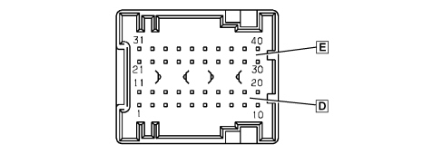
Connector F (20-way), interconnection with CPL (dashboard control unit)
Pin | Function |
|---|---|
1 | +30 battery for boot unlocking geared motor |
2 | Left/right brake lights positive control signal from CPL |
3 | Positive signal for switching on reversing light from CPL |
4 | Not available |
5 | B-CAN B for CPL |
6 | Negative signal controlling heated rear windscreen relay coil |
7 | B-CAN A for CPL |
8 | Negative signal controlling dipped headlamps relay coil |
9 | INT from NBS |
10 | N.C. |
11 | Boot release geared motor positive control |
12 | N.C. |
13 | INT for NQS, CPS, CPD |
14 | Negative signal controlling services relay coil |
15 | INT from NBS |
16 | Not available |
17 | +30 battery for EOBD diagnostic socket |
18 | +30 battery for NBC (immobilizer, CAN, side lights, rear fog lamps, brake lights SBMT driver, +lights driver) |
19 | +30 battery for direction indicators/hazard warning and NQS |
20 | Boot geared motor earth |
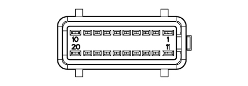
Connector I/H/G (9+18+9 way), dashboard wiring
Pin | Function |
|---|---|
1 | Fog lights control negative signal |
2 | LIGHT2 coded negative signal from lights control on steering column switch unit (side/auto/dipped beam) |
3 | +30 battery for NQS |
4 | Main beam headlamps control negative signal from steering column switch unit |
5 | B-CAN A for NQS |
6 | B-CAN B for NQS |
7 | Negative signal controlling right direction indicator/parking light from steering column switch unit |
8 | NBC signal earth |
9 | NBC power earth |
10 | N.C. |
11 | N.C. |
12 | N.C. |
13 | Door status signal LED positive control |
14 | N.C. |
15 | N.C. |
16 | +30 SBMT for compartment light |
17 | Parking lights control negative signal from left control panel (PCS) |
18 | Activation of lighting on constantly with side lights on for preparation for telephone, cigar lighter, control panel on tunnel (PCT), NSC, vehicle starting button (PAV) |
19 | Earth for PCS |
20 | N.C. |
21 | Positive control for LED signalling heated rear windscreen on |
22 | N.C. |
23 | Repetition of speedometer signal (VSO) for CTA |
24 | B-CAN B for NTR, NRR/NIT, NVO, NAB and NBS |
25 | B-CAN A for NTR, NRR/NIT, NVO, NAB and NBS |
26 | N.C. |
27 | INT/A from CPL |
28 | LIGHT1 coded negative signal from lights control on steering column switch unit (side/auto/dipped beam) |
29 | Hazard warning lights on LED positive control |
30 | Negative signal controlling left direction indicator/parking light from steering column switch unit |
31 | INT for NQS |
32 | Negative signal from heated rear windscreen control button |
33 | Flasher control negative signal from steering column switch unit |
34 | Negative signal from hazard warning lights control switch (CEM) |
35 | Negative signal from rear fog lamps control button |
36 | Earth for NQS |
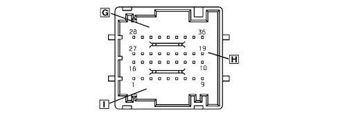
DASHBOARD CONTROL UNIT (CPL)
Specifications
The CPL is a junction unit with circuits, installed on the driver's side of the dashboard, which contains fuses and relays and performs an interconnecting function for the front, dashboard and rear wiring.
It is also connected to the Body Computer Node via a connector at the back.
The CPL + NBC supply status is known as the Dashboard Node (NPL).
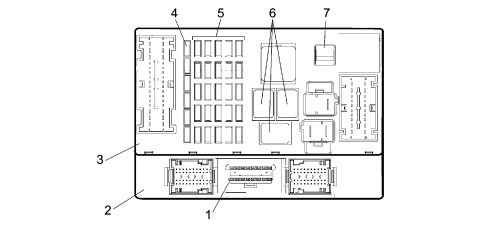
1 - Diagnostic socket EOBD connector
2 - Body Computer (NBC)
3 - Dashboard Control Unit (CPL)
4 - Reserve fuses
5 - System protective fuses
6 - Relays
7 - Fuse extraction pliers
The front view of the control unit is illustrated in the diagram below.
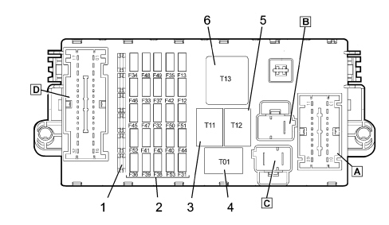
1 - Reserve fuses
2 - Protective fuses
3 - Heated rear windscreen relay (T11, 30A)
4 - Dipped headlamps relay (T01, 30A)
5 - Services 1 relay (T12, 30A)
6 - Services 2 relay (T13, 50A)
A - connector A
B - connector B
C - connector C
D - connector D
The rear view of the control unit is illustrated in the diagram below.
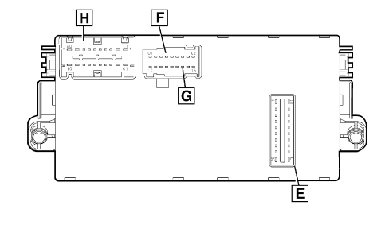
E - connector E (connection with the Body Computer)
F - connector F
G - connector G
H - connector H
Dashboard control unit pin out
Connector A (20 way), front wiring
Pin | Function |
|---|---|
1 | Left/right headlamp alignment correcter actuator control signal |
2 | Left/right headlamp alignment correcter actuator power supply |
3 | Left dipped headlamp power supply (basic and gas discharge versions) |
4 | N.C. |
5 | N.C. |
6 | N.C. |
7 | INT/A from NBS for CVM |
8 | Reversing lights power supply from switch on gearbox |
9 | Fuel pump power supply from relay |
10 | Steering column switch unit power supply for windscreen wiper/two-way pump |
11 | INT for NFR, NAS, NYL |
12 | Right dipped headlamp power supply (basic and gas discharge versions) |
13 | INT for NGE |
14 | INT for NA brake lights (to the switch on the pedal assembly) |
15 | Brake lights power supply from switch on pedal assembly |
16 | Brake lights signal (NA) for NCM/NFR |
17 | INT for water in diesel filter sensor, AQS sensor and CRS |
18 | INT for reversing lights |
19 | INT for brake lights control (NC) |
20 | N.C. |
Connector B (2 way), rear wiring
Pin | Function |
|---|---|
A | +30 battery for CVB from CVM |
B | Not available |
Connector C (2 way), front wiring
Pin | Function |
|---|---|
A | +30 battery from battery control unit (CBA) |
B | +30 battery from engine compartment control unit (CVM) |
Connector D (32 way), rear wiring
Pin | Function |
|---|---|
1 | Power supply for NVB (left rear electric window) |
2 | Power supply for NVB (right rear electric window) |
3 | Power supply for electric blind (sun roof) |
4 | Sun roof control unit power supply (CTA) |
5 | Additional brake light power supply |
6 | N.C. |
7 | Left reversing light power supply from switch on gearbox |
8 | Right reversing light power supply from switch on gearbox |
9 | Negative signal from rearscreen wiper motor cam |
10 | B-CAN A, connection via short circuiting coupling with NAP, NVB, NPG, NPP, NSP, NAG |
11 | +30 battery for NPG and NPP |
12 | Power supply for cigar lighter and luggage compartment control unit coils (CVB) |
13 | +30 battery for NVB, Trailer Control Unit preparation |
14 | Power supply for current socket on tunnel |
15 | Heated rear windscreen power supply |
16 | Not available |
17 | Power supply for NPP (front passenger electric window) |
18 | Boot release geared motor positive control |
19 | INT for parking sensors (NSP) |
20 | Rear wiper motor power supply |
21 | N.C. |
22 | N.C. |
23 | INT for rain/dusk sensor control unit (CSP) |
24 | INT for sun roof control lighting |
25 | INT power supply preparation (N.C.) |
26 | INT power supply preparation (N.C.) |
27 | INT power supply preparation (N.C.) |
28 | B-CAN B, connection via short circuiting coupling with NAP, NVB, NPG, NPP, NSP, NAG |
29 | Not available |
30 | Power supply for NPG (driver's front electric window) |
31 | Windscreen/rearscreen washer jet defroster power supply |
32 | Fuel pump power supply |
Connector E (20 way), connection with NBC (Body Computer)
Pin | Function |
|---|---|
1 | +30 battery for boot unlocking geared motor |
2 | Left/right brake lights positive control signal |
3 | Reversing light engagement positive signal |
4 | Not available |
5 | B-CAN B from NBC |
6 | Negative signal controlling heated rear windscreen relay coil |
7 | B-CAN A from NBC |
8 | Negative signal controlling dipped headlamps relay coil |
9 | INT for NBC |
10 | N.C. |
11 | Boot release geared motor positive control |
12 | N.C. |
13 | INT for NQS, CPS, CPD |
14 | Negative signal controlling services relay coil |
15 | INT from NBC |
16 | Not available |
17 | +30 battery for CSA, NAS, CAV, EOBD diagnostic socket, courtesy lights, CRS |
18 | +30 battery for NBC (immobilizer, CAN, side lights, rear fog lamps, brake lights SBMT driver, +lights driver) |
19 | +30 battery for direction indicators/hazard warning and NQS |
20 | N.C. |
Connector F/G (9+9 way), dashboard wiring
Pin | Function |
|---|---|
1 | N.C. |
2 | INT power supply preparation (N.C.) |
3 | Not available |
4 | Not available |
5 | N.C. |
6 | Not available |
7 | Not available |
8 | INT power supply preparation (N.C.) |
9 | INT power supply preparation (N.C.) |
10 | N.C. |
11 | Rearscreen wiper motor power supply from steering column switch unit |
12 | INT for hazard warning lights ideogram light |
13 | N.C. |
14 | Dipped headlamps + power supply for headlamp alignment correcter at NQS |
15 | Negative signal from rearscreen wiper motor cam to steering column switch unit |
16 | +30 battery for TEG Reader (NTR) |
17 | Power supply for steering column switch unit (rearscreen wiper) |
18 | Signal from headlamp alignment correcter control at NQS |
Connector H (20 way), dashboard wiring
Pin | Function |
|---|---|
1 | INT/A from NBS |
2 | N.C. |
3 | INT for NVO, NIT, steering column switch unit (cruise controls), PCT, NCL and preparation for telephone |
4 | INT power supply preparation (N.C.) |
5 | B-CAN B for NCL |
6 | INT for NAB |
7 | +30 battery for NCL, RF receiver and additional heater |
8 | +30 battery for telephone preparation |
9 | INT power supply preparation (N.C.) |
10 | Power earth |
11 | INT from NBS |
12 | INT for CPP |
13 | INT power supply preparation (N.C.) |
14 | INT/A for NBC |
15 | N.C. |
16 | N.C. |
17 | B-CAN A for NCL |
18 | Not available |
19 | +30 power supply preparation (N.C.) |
20 | +30 power supply preparation (N.C.) |
Fuses
The CPL dashboard control unit protects the electrical system through the following fuses:
COD | COMPONENT | Amp. |
|---|---|---|
F12 | FUSE RIGHT DIPPED HEADLAMP | 15 |
F13 | FUSE LEFT DIPPED HEADLAMP, HEADLAMP ALIGNMENT CORRECTOR | 15 |
F31 | FUSE INT/A CVM RELAY COILS, BODY COMPUTER | 7.5 |
F32 | FUSE +30 DOOR NODES (NPG, NPP), TEG READER (NTR) | 15 |
F33 | FUSE LUGGAGE COMPARTMENT NODE 1 (NVB) | 20 |
F34 | FUSE LUGGAGE COMPARTMENT NODE 1 (NVB) | 20 |
F35 | FUSE +15 WATER IN DIESEL SENSOR, REVERSING LIGHTS, ADDITIONAL HEATER (CRS), BRAKE LIGHTS SWITCH (NC), FLOW METER | 7.5 |
F36 | FUSE +30 LUGGAGE COMPARTMENT NODE (NVB), PREPARATION FOR TRAILER CONTROL UNIT | 20 |
F37 | FUSE +15 BRAKE LIGHTS SWITCH (NA), THIRD BRAKE LIGHT, INSTRUMENT PANEL (NQS), HEADLAMPS CONTROL UNIT (CPS, CPD) | 10 |
F38 | FUSE +30 BOOT UNLOCKING | 15 |
F39 | FUSE +30 COURTESY LIGHTS, ANTI-THEFT ALARM (CSA), VOLUMETRIC ALARM (CAV), EOBD SOCKET, STEERING ANGLE SENSOR (NAS), CLIMATE CONTROL (NCL), RF RECEIVER, PREPARATION FOR TELEPHONE, ADDITIONAL HEATER | 10 |
F40 | FUSE HEATED REAR WINDSCREEN | 30 |
F41 | FUSE WINDSCREEN/REARSCREEN WASHER JETS | 15 |
F42 | FUSE +15 NFR, STEERING ANGLE SENSOR (NAS), YAW SENSOR (NYL) | 7.5 |
F43 | FUSE WINDSCREEN WIPER/TWO-WAY PUMP | 30 |
F44 | FUSE CURRENT SOCKET ON TUNNEL (max 180W) | 20 |
F45 | FUSE SUN ROOF (CTA) | 20 |
F46 | FUSE ROOF BLIND MOTOR | 20 |
F47 | FUSE DRIVER'S DOOR NODE (NPG) | 20 |
F48 | FUSE PASSENGER DOOR NODE (NPP) | 20 |
F49 | FUSE +15 PARKING SENSORS (NSP), IDEOGRAM LIGHTS, RAIN/DUSK SENSOR (CSP), ROOF BLIND MOTOR, STEERING WHEEL NODE (NVO), NRR/NIT, TUNNEL CONTROL PANEL (PCT), HAZARD CONTROL IDEOGRAMS (CEM), CLIMATE CONTROL (NCL), CRUISE CONTROL SYSTEM CONTROLS, PREPARATION FOR TELEPHONE | 7.5 |
F50 | FUSE +15 AIR BAG SYSTEM (NAB) | 7.5 |
F51 | FUSE +15 ELECTRIC STEERING (NGE), TYRE PRESSURE (CPP) | 7.5 |
F52 | FUSE CIGAR LIGHTER, CVB RELAY COILS, REARSCREEN WIPER | 15 |
F53 | FUSE +30 INSTRUMENT PANEL (NQS) | 7.5 |
For further details,
ENGINE COMPARTMENT CONTROL UNIT (CVM)
Specifications
The CVM is a junction unit with circuits, installed on the battery container, which contains fuses and relays and performs an interconnecting function for the front wiring, engine pre-wiring and radiator pre-wiring.
This wiring is connected to the control unit through fixed couplings. These couplings can be easily reached as they are positioned to facilitate fitting or dismantling operations.
There is a fastening on the lower cover for sealed fuse holder connectors (maxi and auto type).
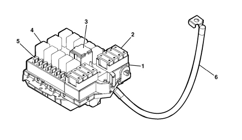
1 - Engine compartment control unit (CVM)
2 - System protective maxifuse
3 - Maxi type relay
4 - Micro type relay
5 - System protective mini fuses
6 - Connecting cable between battery (CBA) and engine compartment CVM
The maxi fuses are grouped together in both the battery control unit (CBA) and the engine compartment control unti (CVM) connected directly to the positive battery pole and protecting the main supply lines.
The engine compartment control unit (CVM) is illustrated below.
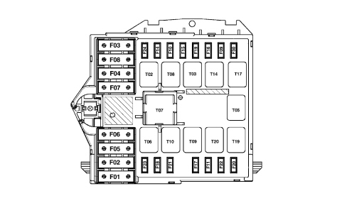
Fuses
COD | COMPONENT | Amp. |
|---|---|---|
F01 | FUSE +30 DASHBOARD CONTROL UNIT 2 (CPL) | 60 |
F02 | FUSE +30 CLIMATE CONTROL FAN | 40 |
F03 | FUSE +30 STEERING LOCK (NBS) | 20 |
F04 | FUSE +30 BRAKE NODE (NFR, PUMP) | 40 |
F05 | FUSE +30 BRAKE NODE (NFR, SOLENOID VALVES/ELECTRONICS) | 40 |
F06 | FUSE +30 ENGINE COOLING FAN (LOW SPEED) | 40/50 (900W) |
F07 | FUSE +30 ENGINE COOLING FAN (HIGH SPEED) | 40/50 (900W) |
F08 | FUSE CLIMATE CONTROL SYSTEM | 40 |
F09 | FUSE HEADLAMP WASHER PUMP | 20 |
F10 | FUSE HORNS | 15 |
F11 | FUSE I.E. SECONDARY SERVICES | 15 |
F14 | FUSE RIGHT MAIN BEAM HEADLAMP | 10 |
F15 | FUSE LEFT MAIN BEAM HEADLAMP | 10 |
F16 | FUSE 15/54 I.E. SYSTEM (RELAY FEEDS, NCM) | 7.5 |
F17 | FUSE I.E. MAIN SERVICES | 10 |
F18 | FUSE +30 AUTOMATIC TRANSMISSION (NCA), GEAR SELECTOR (NSC), I.E. SYSTEM (RELAY FEEDS, NCM) | 7.5 |
F19 | FUSE AIR CONDITIONING COMPRESSOR | 7.5 |
F20 | FUSE DIESEL FILTER PTC | 30 |
F21 | FUSE FUEL PUMP | 15 |
F22 | FUSE I.E. MAIN SERVICES | 15 (BZ) /20(JTD) |
F23 | FUSE +30 RADIO RECEIVER/INFO TELEMATIC NODE (NRR/NIT), ADDITIONAL HEATER (CRS) | 20 |
F24 | FUSE 15/54 AUTOMATIC TRANSMISSION (NCA), GEAR SELECTOR (NSC) | 15 |
F30 | FUSE FOG LIGHT | 15 |
Relays
The following relays are housed in the engine compartment control unit:
COD | COMPONENT | Amp. |
|---|---|---|
T02 | MAIN BEAM HEADLAMPS RELAY | 20 |
T03 | HORN RELAY | 20 |
T05 | AIR CONDITIONING COMPRESSOR RELAY | 20 |
T06 | SPARE RELAY HOUSING | - |
T07 | BRIDGE FOR RELAY MAXI HOUSING (TERMINALS 30-87) | 50 |
T08 | CLIMATE CONTROL FAN RELAY | 30 |
T09 | INJECTION MAIN RELAY | 30 |
T10 | FUEL PUMP RELAY | 20 |
T14 | FOG LIGHTS RELAY | 20 |
T17 | HEADLAMP WASHER RELAY | 20 |
T19 | RELAY FOR HEATED DIESEL FILTER | 30 |
T20 | REVERSING LIGHTS RELAY (AUTO TRANS VERSIONS) | 20 |
For further details,
Rear view
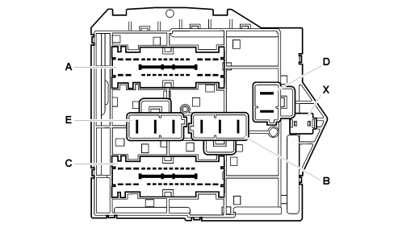
A: connector A
B: connector B
C: connector C
D: connector D
E: connector E (radiator cable)
X: connector X (supply from junction unit on battery)
Engine compartment junction unit pin out
Connector A (32 way), front wiring
Pin | Function |
|---|---|
1 | Headlamp washer pump power supply |
2 | +30 battery for NCA and NSC |
3 | Outside connection with pin 17 connector A (to auto trans reversing lights relay coil) |
4 | Left fog light power supply |
5 | Right fog light power supply |
6 | Headlamp washer relay negative signal from NBC |
7 | 15/54 for NCA |
8 | 15/54 for NCS |
9 | INT/A power supply preparation from CPL (N.C.) |
10 | INT/A power supply preparation from CPL (N.C.) |
11 | INT/A from CPL |
12 | Main beam headlamps relay negative signal from NBC |
13 | Not available |
14 | INT from CPL for reversing lights relay coil (Auto Trans versions) |
15 | +50 starter motor from NBS |
16 | Not available |
17 | Outside connection with pin 3 connector A (to auto trans versions reversing lights relay coil) |
18 | Power supply preparation from reversing lights relay (N.C.) |
19 | Not available |
20 | 15/54 power supply preparation (N.C.) |
21 | Horn relay feed negative signal from CVS |
22 | Right main beam headlamp power supply |
23 | Fog lights relay negative signal from NBC |
24 | Main beam headlamps + power supply preparation (N.C.) |
25 | Left main beam headlamp power supply |
26 | Climate control relay coil |
27 | Horn power supply |
28 | Power supply preparation (N.C.) |
29 | Not available |
30 | 15/54 from NBS |
31 | +30 battery for NBS |
32 | +30 battery for NRR/NIT and additional heater control unit (CRS) |
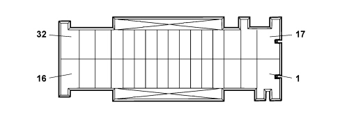
Connector B (3 way), front wiring
Pin | Function |
|---|---|
A | +30 battery for dashboard control unit (CPL) |
B | +30 battery for climate control fan |
C | Power supply for climate control system |
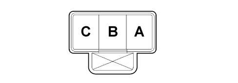
Connector C (32 way), engine wiring
Pin | Function |
|---|---|
1 | INT from CPL for reversing lights relay contact (Auto Trans versions) |
2 | Power supply for diesel filter PTC heater |
3 | Reversing lights relay feed negative signal from NCA |
4 | Air conditioning compressor power supply |
5 | Air conditioning compressor relay feed negative signal from NCM |
6 | Power supply to diesel filter heater relay coil |
7 | Electronic injection secondary services power supply |
8 | 15/54 for engine management relay coils |
9 | 15/54 for NCM (key-sense) |
10 | Electronic injection main relay feed negative signal from NCM |
11 | Fuel pump relay feed negative signal |
12 | Power supply to electronic injection system main relay coil |
13 | Preparation for 15/54 power supply for engine management relay coils (N.C.) |
14 | Not available |
15 | Not available |
16 | Not available |
17 | Power supply to reversing lights (Auto Trans versions) |
18 | Electronic injection main services power supply |
19 | +50 starter motor from NBS |
20 | Not available |
21 | Negative signal preparation to engine cooling fan relay coil (high speed) (N.C.) |
22 | Diesel filter heater relay feed negative signal |
23 | +30 battery for NCM |
24 | +30 battery for electronic injection system relay coils (possible) |
25 | Not available |
26 | Not available |
27 | Main services power supply |
28 | Engine cooling fan relay coil negative signal preparation (low speed, preparation) (available relay, N.C.) |
29 | Power supply to fuel pump relay coil |
30 | Fuel pump power supply |
31 | Electronic injection main services power supply |
32 | Electronic injection main services power supply |

Connector D (2 way), front wiring
Pin | Function |
|---|---|
A | +30 battery for NFR (solenoid valves, electronics) |
B | +30 battery for NFR (pump) |
Connector E (2 way), radiator wiring
Pin | Function |
|---|---|
A | +30 battery engine cooling fan (high speed) |
B | +30 battery engine cooling fan (low speed) |
C | Power supply preparation (N.C.) |

Connector X (2 way), battery positive
Pin | Function |
|---|---|
1 | +30 battery from battery control unit (CBA) |
BATTERY CONTROL UNIT (CBA)
Specifications
The Battery Control Unit is a power distribution control unit located on the battery.
It includes protective fuses (MIDI/MEGA), the connection to the postive battery pole and to the starting/reacharging lead.
It has a plastic type protection that prevents accidental contact with the positive battery pole.
It should be possible to inspect the control unit to allow emergency starting.
On the 2.2 petrol model, the CBA is designed to include an automatic battery disconnection device in series with the battery terminal capable of interrupting the starter motor/recharging lead power supply when the intertia switch is activated.
The CBA is connected to the front wiring, to the CVM supply lead and to the positive battery lead for the starting/recharging circuit.
The Battery Control Unit components are illustrated below.
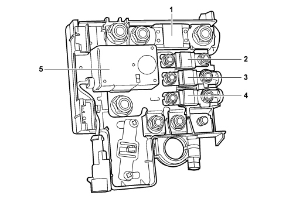
1 – F70
2 - F73 (except for the 2.2 petrol version)
3 – F72
4 – F71
5 - SB Automatic battery disconnecter (only valid for 2.2 petrol version)
Fuses
COD | COMPONENT | Amp. |
|---|---|---|
F70 | FUSE +30 ENGINE COMPARTMENT CONTROL UNIT (CVM) | 150 |
F71 | FUSE +30 DASHBOARD CONTROL UNIT 1 (CPL) | 70 |
F72 | FUSE +30 HEATER PLUGS CONTROL UNIT (CPR) | 60 |
F73 | FUSE +30 ELECTRIC STEERING NODE (NGE) (except for the 2.2 petrol version) | 80 |
SB | AUTOMATIC BATTERY DISCONNECTER (only valid for 2.2 petrol version) | 150 |
For further details,
On the 2.2 petrol versions, the protective fuse for the Electric Steering Node (NGE) is outside the Battery Control Unit.
The Battery Control Unit connections are illustrated in the diagram.
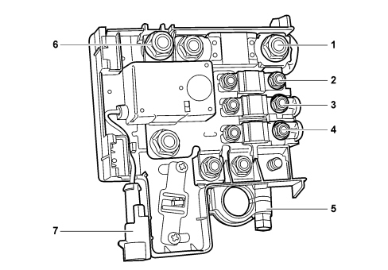
1 - Connector A
2 - Connector D
3- Connector C
4 - Connector B
5 - Battery positive
6 - Connector E (Battery positive for stater motor/recharging and, on the 2.2 petrol version, NGE protective fuse)
7 - Connector F (battery disconnecter relay engagement signal)
LUGGAGE COMPARTMENT CONTROL UNIT (CVB)
Specifications
The CVB is a plastic support, fitted on the left side of the boot, on which the fuses and relays for the optional services are installed.
The component is supplied wired on the rear wiring and has a secondary lock.
The luggage compartment control unit (CVB) is illustrated below.
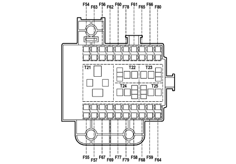
Fuses
COD | COMPONENT | Amp. |
|---|---|---|
F54 | FUSE +30 OUTSIDE RADIO AMPLIFIER | 25 |
F55 | SPARE FUSE | - |
F56 | FUSE +30 STEERING POSITION NODE (NAG) | 25 |
F57 | FUSE DRIVER'S FRONT SEAT HEATING | 7.5 |
F58 | SPARE FUSE | - |
F59 | SPARE FUSE | - |
F60 | FUSE +30 PASSENGER POSITION NODE (NAP) | 25 |
F61 | SPARE FUSE | - |
F62 | SPARE FUSE | - |
F63 | SPARE FUSE | - |
F64 | SPARE FUSE | - |
F65 | SPARE FUSE | - |
F66 | SPARE FUSE | - |
F67 | FUSE PASSENGER FRONT SEAT HEATING | 7.5 |
F68 | SPARE FUSE | - |
F69 | SPARE FUSE | - |
F77 | SPARE FUSE | - |
F78 | SPARE FUSE | - |
F79 | SPARE FUSE | - |
F80 | SPARE FUSE | - |
Relays
The following relays are housed in the luggage compartment control unit:
COD | COMPONENT | Amp. |
|---|---|---|
T21 | FRONT SEAT MOVEMENT/HEATING RELAYS | 50 |
T22 | SPARE RELAY | - |
T23 | SPARE RELAY | - |
T24 | SPARE RELAY | - |
T25 | SPARE RELAY | - |
For further details,
DOOR NODES
The control functions for the four doors and the tailgate are carried out by several specific CAN nodes which act in connection with the Body Computer:
- DRIVER'S DOOR NODE (NPG)
- PASSENGER DOOR NODE (NPP)
- LUGGAGE COMPARTMENT NODE (NVB) (which controls the rear doors)
The door nodes are located inside the relevant door panel and the luggage compartment node is under the rear seats, as illustrated:
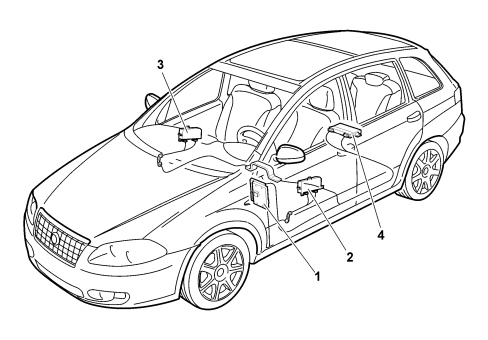
1 - Body Computer
2 - Driver's door node
3 - Passenger door node
4 - Luggage compartment node
Driver's door node
The driver's door node is located inside the driver's door panel.
Its functions are listed below:
- Locking/unlocking doors/boot and fuel flap
- Front electric windows with manual up/down and automatic and anti-crush safety function
- Rear electric windows with manual up/down and automatic and anti-crush safety function
- Inhibition of rear electric windows from driver's seat
- Electric exterior mirrors
- Door mirrors defrosting timed managment
- Door mirrors folding
- Acquisition and management of outside temperature
- Opening/closing of windows by remote control and T.E.G. back up insert
- Dead-lock engagement/release
- Vehicle protection system signals
Driver's door node
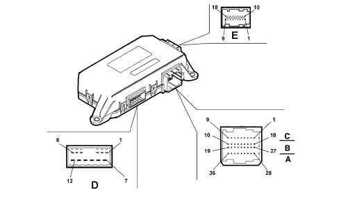
Connector D
Pin | Function |
|---|---|
1 | Door opening geared motor (negative) (N.C.) |
2 | Door opening geared motor (positive) (N.C.) |
3 | Dead lock geared motor |
4 | Door locking/unlocking geared motor |
5 | Fuel flap locking/unlocking geared motor |
6 | Joint lock motors (safety-dead-lock) |
7 | Power earth |
8 | Electric window power supply |
9 | Window raising positive control |
10 | Window lowering positive control |
11 | DRIVER'S DOOR NODE direct power supply |
12 | Fuel flap locking/unlocking geared motor |
Connector C/B/A
Pin | Function |
|---|---|
1 | Analogue signal from right rear window buttons |
2 | Window anti-crush safety sensor (signal) |
3 | Negative signal from rear window exclusion button |
4 | Interior handle LED lighting earth (N.C.) |
5 | Window anti-crush safety sensor (negative) |
6 | Door status LED earth |
7 | Rear windows exclusion LED positive control |
8 | Door status LED positive control |
9 | Interior handle LED lighting positive control (N.C.) |
10 | Window anti-crush safety sensor power supply |
11 | Window anti-crush safety sensor power earth |
12 | Positive signal from driver's rear spot light control button |
13 | N.C. |
14 | Driver's rear courtesy light timer/dimmer negative control |
15 | B-CAN B |
16 | B-CAN A |
17 | Puddle courtesy light timer negative control |
18 | Puddle courtesy light protected power supply |
19 | Electronic earth |
20 | Analogue signal from mirror folding control |
21 | Negative signal for opening using switch on outer handle (N.C.) |
22 | Earth for lock |
23 | Negative signal from motor bar switch N.A. (locking) |
24 | Negative signal from key pawl in driver's lock (dead lock locking) (N.C.) |
25 | Negative signal from key pawl in driver's lock (dead lock locking) (N.C.) |
26 | N.C. |
27 | Analogue signal from left rear window buttons |
28 | Electric rear view mirrors deflector control analogue signal (up/down movement) |
29 | Electric rear view mirrors deflector control analogue signal (left/right movement) |
30 | Electric rear view mirrors selection control analogue signal (driver's side/passenger side) |
31 | Analogue signal from front driver's electric window control buttons |
32 | Analogue signal from front passenger side electric window control buttons |
33 | Switch trim earth |
34 | Door locking command from button |
35 | Door unlocking command from button |
36 | Switch trim dimmed lighting positive control |
Connector E (connection with door mirror)
Pin | Function |
|---|---|
1 | Mirror folding activation (closing) |
2 | Signal from outside temperature sensor |
3 | Left/right mirror deflector activation |
4 | Mirror deflector motors joint supply |
5 | Up/down mirror deflector activation |
6 | Outside temperature sensor negative |
7 | Mirror defroster protected power supply |
8 | Mirror folding activation (opening) |
9 | Mirror defroster timed negative control |
10 | Signal from potentiometer memorizing deflector horizontal position |
11 | Signal from potentiometer memorizing deflector vertical position |
12 | N.C. |
13 | N.C. |
14 | N.C. |
15 | Mirror deflector position signalling potentiometers negative reference |
16 | Puddle courtesy light protected power supply on mirror (N.C.) |
17 | Mirror deflector position signalling potentiometers power supply |
18 | Puddle courtesy light timed negative command on mirror (N.C.) |
Passenger door node
The passenger door node is located inside the passenger door panel.
Its functions are listed below:
- Locking/unlocking the doors/boot
- Front electric window with manual up/down and automatic and anti-crush safety function
- Opening/closing of windows by remote control and T.E.G. back up insert
- Electric exterior mirrors
- Door mirrors defrosting timed managment
- Door mirrors folding
- Dead-lock engagement/release
Passenger door node
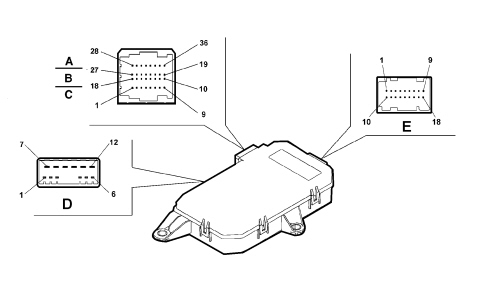
Connector D
Pin | Function |
|---|---|
1 | Door opening geared motor (negative) (N.C.) |
2 | Door opening geared motor (positive) (N.C.) |
3 | Dead lock geared motor |
4 | Door locking/unlocking geared motor |
5 | N.C. |
6 | Joint lock motors (safety dead-lock) |
7 | Power earth |
8 | Electric window power supply |
9 | Window raising positive control |
10 | Window lowering positive control |
11 | PASSENGER DOOR NODE direct power supply |
12 | N.C. |
Connector C/B/A
Pin | Function |
|---|---|
1 | N.C. |
2 | Window anti-crush safety sensor (signal) |
3 | N.C. |
4 | Interior handle LED lighting earth (N.C.) |
5 | Window anti-crush safety sensor (negative) |
6 | N.C. |
7 | N.C. |
8 | N.C. |
9 | Interior handle LED lighting positive control (N.C.) |
10 | Window anti-crush safety sensor power supply |
11 | Window anti-crush safety sensor power earth |
12 | Positive signal from passenger side rear spot light control button |
13 | N.C. |
14 | Passenger side rear courtesy light timer/dimmer negative control |
15 | B-CAN B |
16 | B-CAN A |
17 | Puddle courtesy light timer negative control |
18 | Puddle courtesy light protected power supply |
19 | Electronic earth |
20 | N.C. |
21 | Negative signal for opening using switch on outer handle (N.C.) |
22 | Earth for lock |
23 | Negative signal from motor bar switch N.A. (locking) |
24 | Negative signal from key pawl in passenger side lock (dead lock locking) (N.C.) |
25 | Negative signal from key pawl in passenger side lock (dead lock locking) (N.C.) |
26 | N.C. |
27 | N.C. |
28 | N.C. |
29 | N.C. |
30 | N.C. |
31 | N.C. |
32 | Analogue signal from front passenger side electric window control buttons |
33 | Switch trim earth |
34 | N.C. |
35 | N.C. |
36 | Switch trim dimmed lighting positive control |
Connector E (connection with door mirror)
Pin | Function |
|---|---|
1 | Mirror folding activation (closing) |
2 | N.C. |
3 | Left/right mirror deflector activation |
4 | Mirror deflector motors joint supply |
5 | Up/down mirror deflector activation |
6 | N.C. |
7 | Mirror defroster protected power supply |
8 | Mirror folding activation (opening) |
9 | Mirror defroster timed negative control |
10 | Signal from potentiometer memorizing deflector horizontal position |
11 | Signal from potentiometer memorizing deflector vertical position |
12 | N.C. |
13 | N.C. |
14 | N.C. |
15 | Mirror deflector position signalling potentiometers negative reference |
16 | Puddle courtesy light protected power supply on mirror (N.C.) |
17 | Mirror deflector position signalling potentiometers power supply |
18 | Puddle courtesy light timed negative command on mirror (N.C.) |
Luggage compartment node
The luggage compartment node is located under the rear seats.
Its functions are listed below:
- Locking/unlocking the doors/boot
- Rear electric windows with manual up/down and automatic and anti-crush safety function
- Inhibition of rear electric windows from driver's seat
- Window opening/closing by remote control
- Dead-lock engagement/release
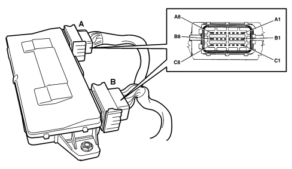
Connector A
Pin | Function |
|---|---|
A1 | Left rear electric window raising positive control |
A2 | Spare relay coil positive control (N.C.) |
A3 | Left rear door timed courtesy light positive control (N.C.) |
A4 | Engine compartment timed courtesy light negative control (N.C.) |
A5 | Left rear window anti-crush safety sensor signal 1 |
A6 | Left rear door opening geared motor (positive) (N.C.) |
A7 | Joint left rear lock motors (safety-dead-lock) |
A8 | Left rear electric window power supply |
B1 | Power earth |
B2 | Positive signal from courtesy light button (N.C.) |
B3 | Left rear window anti-crush safety sensor signal 2 |
B4 | Negative signal from left rear motor bar switch N.A. (locking) |
B5 | Analogue signal from left rear window control button |
B6 | LED dimmer positive control in left rear electric window switch |
B7 | Trailer control unit preparation power supply |
B8 | NVB/ lock actuators power supply |
C1 | Left rear electric window lowering positive control |
C2 | Negative signal for opening using switch on left rear outer handle (N.C.) |
C3 | Negative signal from spare button (N.C.) |
C4 | Left rear door opening geared motor (negative) (N.C.) |
C5 | Left rear handle LED timed lighting positive control (N.C.) |
C6 | Left rear door dead-lock geared motor (N.C.) |
C7 | Left rear door locking/unlocking geared motor |
C8 | Electronic earth |
Connector B
Pin | Function |
|---|---|
A1 | Power earth |
A2 | Joint right rear lock motors (safety-dead-lock) |
A3 | Right rear door opening geared motor (positive) (N.C.) |
A4 | Right rear window anti-crush safety sensor signal 1 |
A5 | Courtesy light in right rear door timed positive control (N.C.) |
A6 | Right rear window anti-crush safety sensor signal 2 |
A7 | B-CAN B |
A8 | Right rear electric window raising positive control |
B1 | Left rear window anti-crush safety sensor earth |
B2 | Right rear handle LED timed lighting positive control (N.C.) |
B3 | LED dimmer positive control in right rear electric window switch |
B4 | Negative signal from right rear motor bar switch N.A. (locking) |
B5 | Analogue signal from right rear window control button |
B6 | Left rear window anti-crush safety sensor power supply |
B7 | B-CAN A |
B8 | Right rear electric window power supply |
C1 | N.C. |
C2 | Right rear door locking/unlocking geared motor |
C3 | Right rear door opening geared motor (negative) (N.C.) |
C4 | Right rear door dead-lock geared motor (N.C.) |
C5 | Negative signal for opening using switch on right rear outer handle (N.C.) |
C6 | Right rear window anti-crush safety sensor earth |
C7 | Right rear window anti-crush safety sensor power supply |
C8 | Right rear electric window lowering positive control |